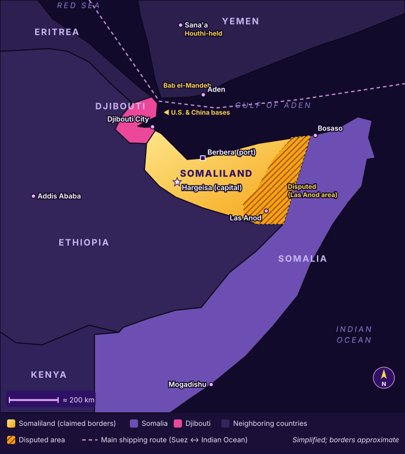

Neighbors & Map
Somaliland sits on one of the busiest shipping routes in the world, surrounded by countries that each want something different.

- Berbera sits right on the Gulf of Aden, close to the main shipping route.
- Djibouti is tiny but hosts both a U.S. base and China's base, only a few miles apart.
- Ethiopia has no coastline at all.
- The Bab el-Mandeb strait is the narrow gate between the Red Sea and the Gulf of Aden, right next to Yemen's Houthis.
The close neighbors
🇪🇹 Ethiopia: wants the sea
- Well over 100 million people but no coastline. It lost its coast when Eritrea became independent in 1993.
- Almost all its trade goes through Djibouti's port, which is expensive.
- January 2024: it signed a deal (an "MoU") with Somaliland: coastline for a naval base in exchange for possible recognition.
- Somalia was furious. Turkey stepped in, and in December 2024 Ethiopia backed off and promised to respect Somalia's borders (the Ankara Declaration).
- The twist: Ethiopia also has troops in Somalia fighting al-Shabaab. That's why the White House warned the deal "threatens to disrupt the fight" against al-Shabaab.
🇩🇯 Djibouti: the competitor
- A tiny country that earns money from its port and from renting land for military bases to the U.S. (Camp Lemonnier), China, France, Japan and others.
- If Somaliland's port of Berbera grows, Djibouti could lose business, so it has a reason to side with Somalia.
- In January 2026, Djibouti sent a delegation to Las Anod for the inauguration of the North Eastern State's leaders.
🇾🇪 Yemen and the Houthis: the danger across the water
- The Houthis control much of Yemen and have attacked ships in the Red Sea since late 2023.
- After Israel recognized Somaliland, the Houthi leader threatened to target any Israeli presence there (January 2026).
- Aff Somaliland could help the U.S. watch the Houthis.
- Neg Recognition could make Somaliland, and Americans there, a target.
🇪🇷 Eritrea: Somalia's friend
In October 2024, Eritrea's, Egypt's and Somalia's leaders met in Asmara and agreed to work together more closely, a move widely seen as pushing back on Ethiopia's sea deal.
The faraway players
| Country | Side | Why |
|---|---|---|
| 🇹🇷 Turkey | Somalia | Somalia's closest ally. Runs a big military training base in Mogadishu and brokered the Ethiopia–Somalia peace. |
| 🇪🇬 Egypt | Somalia | Fighting with Ethiopia over a giant dam on the Nile, so it backs Ethiopia's rivals. Signed a defense pact with Somalia in 2024 and sent troops and weapons. |
| 🇸🇦 Saudi Arabia | Somalia | Condemned Israel's recognition and reportedly pressured other countries not to follow. |
| 🇦🇪 UAE | Leans Somaliland | A UAE company, DP World, runs and expanded the Berbera port. |
| 🇮🇱 Israel | Somaliland | The only country to recognize it (December 2025). Wants a partner near the Houthis. |
| 🇨🇳 China | Somalia | Angry about Somaliland's ties with Taiwan. Has a military base in Djibouti. |
| 🇹🇼 Taiwan | Somaliland | Swapped offices with Somaliland in 2020. |
| 🌍 African Union | Somalia | Says recognition would be a "dangerous precedent," even though its own 2005 mission called the case unique. |
Why this matters in a round
Neg A crowded, dangerous neighborhood
"Turkey, Egypt, Saudi Arabia, China, Djibouti, the African Union: almost everyone is on Somalia's side. The U.S. would be stepping into a fight with half the region."
Aff An opportunity
"Ethiopia, the UAE, Israel and Taiwan already work with Somaliland. The region is already moving toward it. The U.S. can lead instead of falling behind China and Turkey."
Check yourself
Why does Ethiopia care so much about Somaliland?
Ethiopia has no coastline and depends on Djibouti's expensive port. Somaliland could give it its own access to the sea.
Why might Djibouti not want Somaliland to succeed?
Djibouti makes money from its port. If Berbera grows, ships and trade could go there instead.
Pick a faraway country and use it for one side.
Example (Neg): "Egypt and Turkey are already sending troops and support to Somalia. If the U.S. recognizes Somaliland, Somalia could lean even more on them, and the U.S. would lose influence."